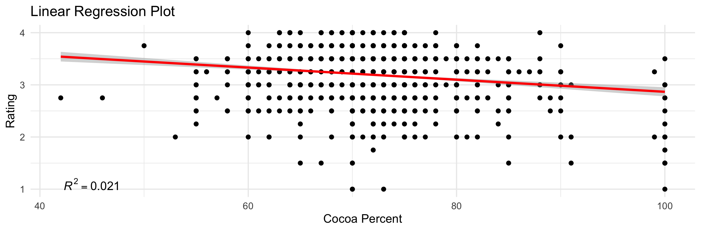
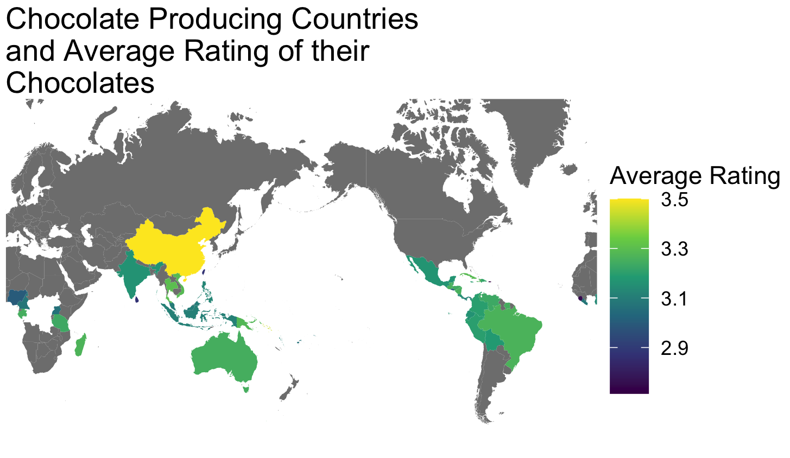

#TidyTuesday the dataset comes from Flavors of Cacao. Interesting set of information on chocolate ratings from across the world. Code below the figures.

blends from different countries, which do not factor into this. There is also an error in the mapping which left some countries out.

# TidyTuesday Week 3, 2022
# Chocolate Flavor Data
library(tidytuesdayR)
library(tidyverse)
library(ggplot2)
library(sjPlot)
library(RColorBrewer)
library(maps)
#data
tuesdata <- tidytuesdayR::tt_load('2022-01-18')
chocolate <- tuesdata$chocolate
#convert cocoa_percent to a numeric
chocolate <- chocolate %>%
mutate(
cocoa_percent = str_extract(cocoa_percent, "\\d+") %>%
as.numeric()
)%>%
mutate(country_of_bean_origin=
recode(country_of_bean_origin,
"Congo"= "Republic of Congo",
"DR Congo"= "Democratic Republic of the Congo")
)
#parse out ingredients by name and assign them binary coding for presence/absence
#from Jesus Castagnetto (https://github.com/jmcastagnetto/tidytuesday-kludges/blob/main/2022-01-18_chocolate/01-get-data.R)
chocolate_df<- chocolate %>%
mutate(
n_ingredients = str_extract(ingredients, "\\d") %>% as.numeric(),
ingredients_list = str_extract(ingredients, "[A-Za-z,*]+")
) %>%
separate_rows(
ingredients_list,
sep = ","
) %>%
mutate(
ingredients_list = str_replace_all(
ingredients_list,
c(
"^S\\*$" = "sweetener",
"^S$" = "sugar",
"C" = "cocoa_butter",
"V" = "vanilla",
"B" = "beans",
"L" = "lecithin",
"^Sa$" = "salt"
)
),
ingredients_list = replace_na(ingredients_list, "unknown"),
flag = 1
) %>%
pivot_wider(
names_from = ingredients_list,
values_from = flag,
values_fill = 0
)
#simple plot of rating vs cocoa%
graph <- ggplot(chocolate_df, aes(x = cocoa_percent, y = rating)) +
geom_point() +
stat_smooth(method = "lm", col = "red")+
labs(x='Cocoa Percent', y='Rating', title='Linear Regression Plot') +
theme(plot.title = element_text(hjust=0.5, size=20, face='bold'))+
theme_minimal()+
annotate("text", x = 45, y = 1.1, label = "italic(R) ^ 2 == 0.021", parse= TRUE)
graph
#testing what predicts rating, if there are correlations
model1 <- lm(rating ~
cocoa_percent,
data= chocolate_df
)
summary(rating)
model2 <- lm(rating ~
cocoa_percent+
sweetener+
sugar+
cocoa_butter+
vanilla+
beans+
lecithin+
salt,
data=chocolate_df)
model3 <- lm(rating ~
sweetener+
sugar+
cocoa_butter+
vanilla+
beans+
lecithin+
salt,
data=chocolate_df)
#creating table to view results
tab_model(model1, model2, model3,
dv.labels = c("Model 1", "Model 2", "Model 3"),
show.ci= FALSE,show.est=F,
show.std=T, show.stat=T, show.p= TRUE, p.style = "stars",
string.pred = "Rating",
string.std="B", string.stat="p")
#summarise by country
chocolate_df2 <- chocolate_df %>%
group_by(country = country_of_bean_origin)%>%
summarise(avg_rating=mean(na.omit(rating)),
avg_cocoa=mean(na.omit(cocoa_percent)))
#brought in all country names due to error in making map with only those that export cocoa beans
countries <- read_csv("2022-01-18/countries.csv")
chocolate_df2 <- right_join(chocolate_df2, countries, by="country")
#retrieve country geo data
world <- map_data("world2")%>%
filter(region != "Antarctica")
#world map
worldmap <- chocolate_df2 %>%
ggplot(aes(map_id=country))+
geom_map(aes(fill=avg_rating), map=world)+
expand_limits(x= world$long, y=world$lat)+
scale_fill_continuous(type = "viridis")+
coord_map("mercator")+
labs(fill = "Average Rating", title= str_wrap("Chocolate Producing Countries and Average Rating of their Chocolates", 30))+
theme(legend.position="bottom", plot.title = element_text(hjust =0.5))+
theme_void()
ggsave("featured.png")